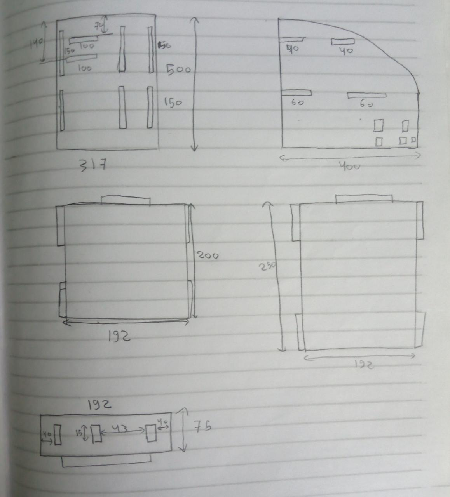
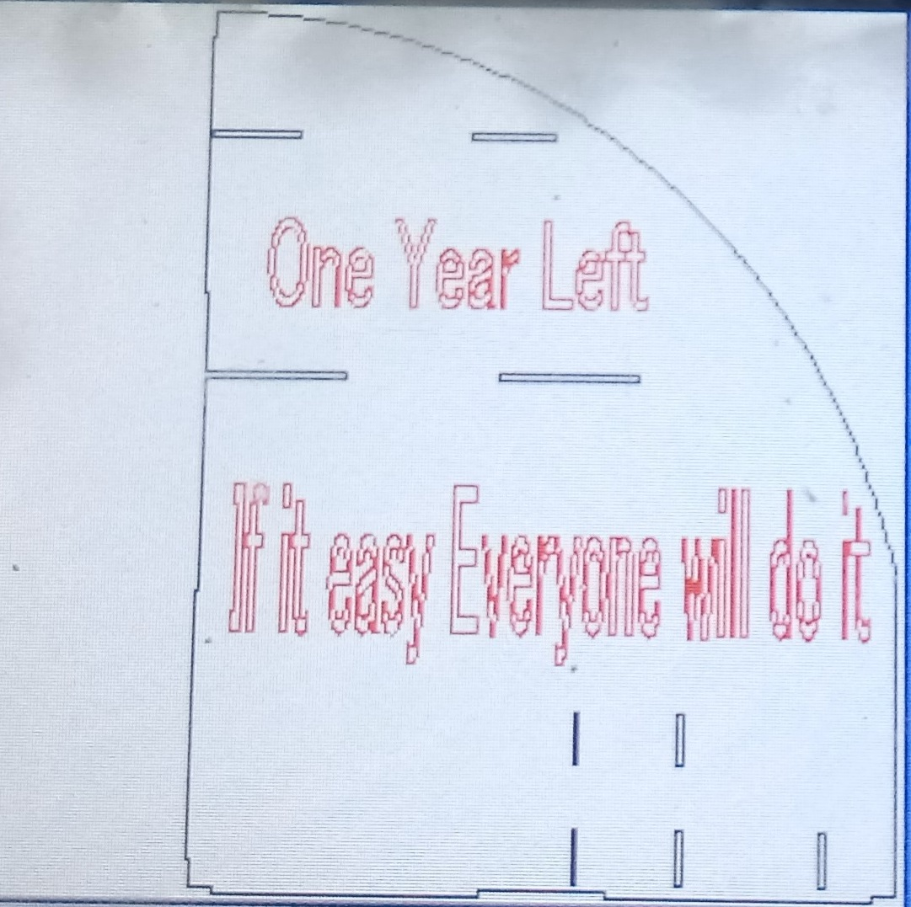

step1:
I started with brainstorming to see how I can make the design of the shape so I started with hand sketching to imagine the dimensions.
step2:
After making hand sketching I started to use SolidWorks to draw parts that are seen in the page above after that I started to make assembly to put the parts together
step3:
The next step is to use the RD Works Program to prepare the files to be ready for printing in the laser cutting machine so I exported the files from Solidworks as DFX files
step4:
The next step is to start to make the machine reads the rd files from RD Work Program and start to cut the files.